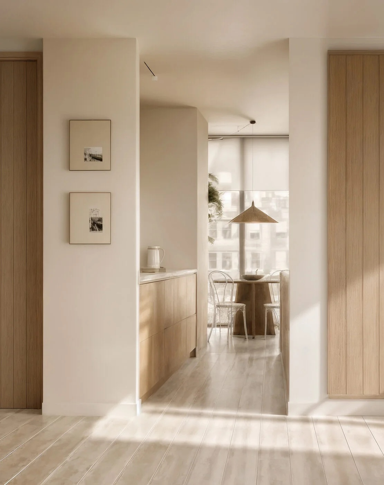
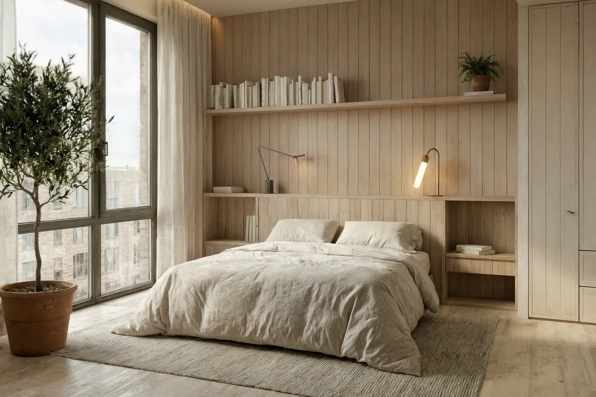
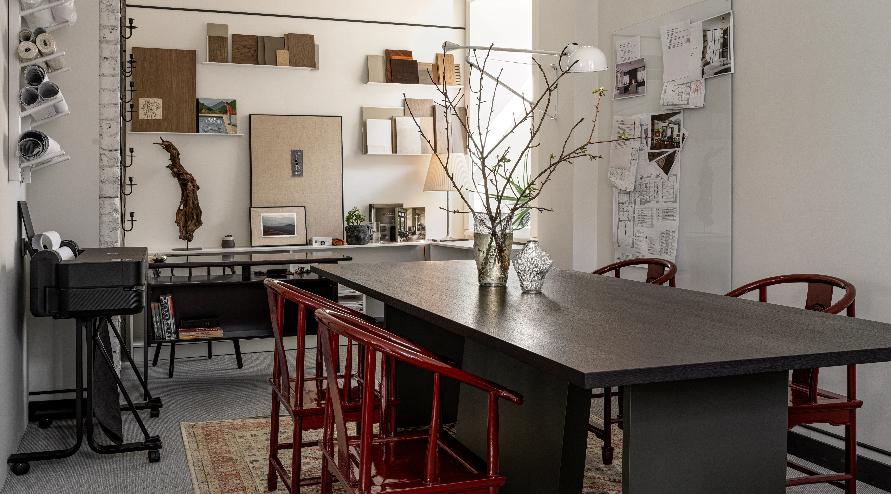
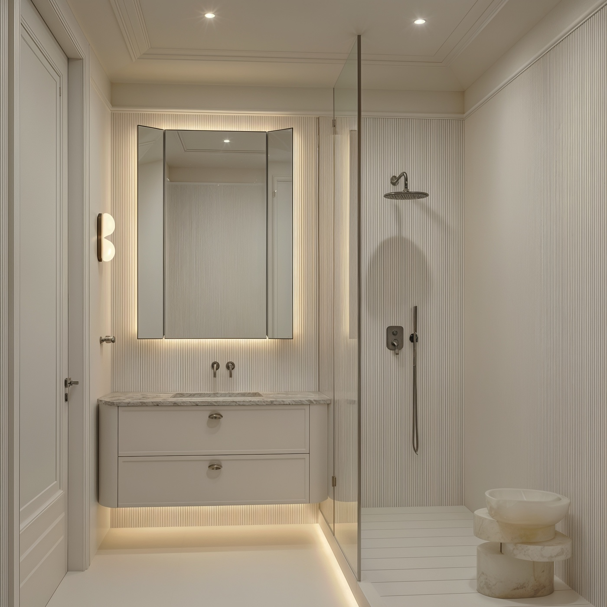
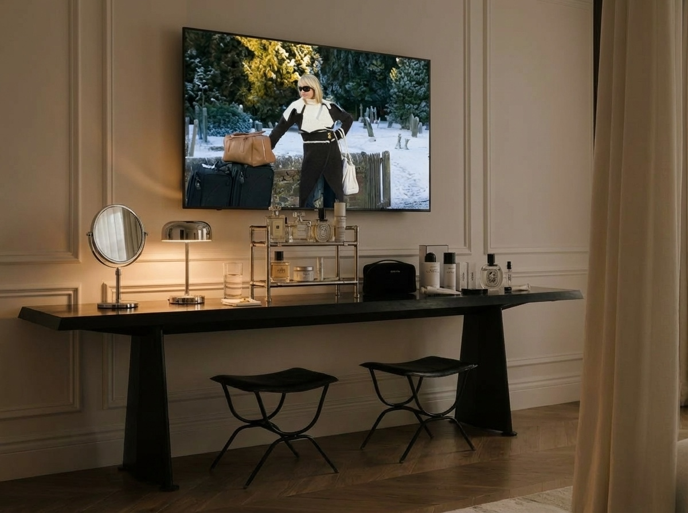
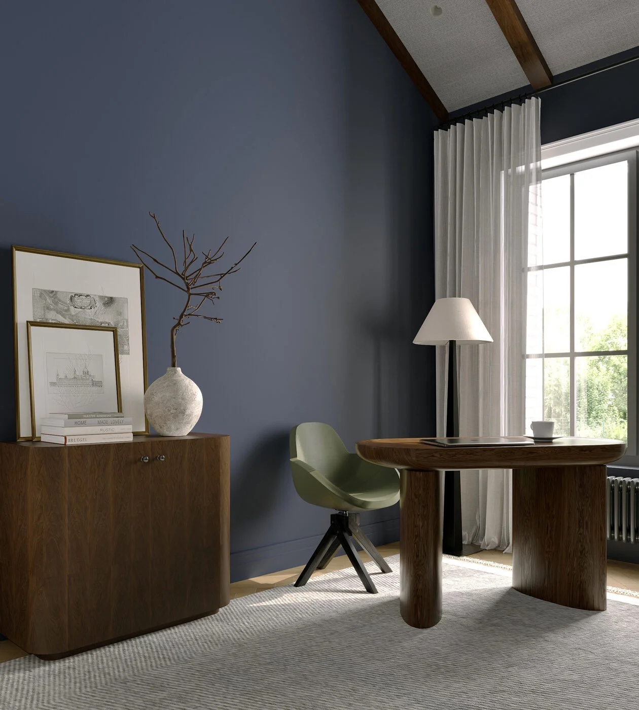
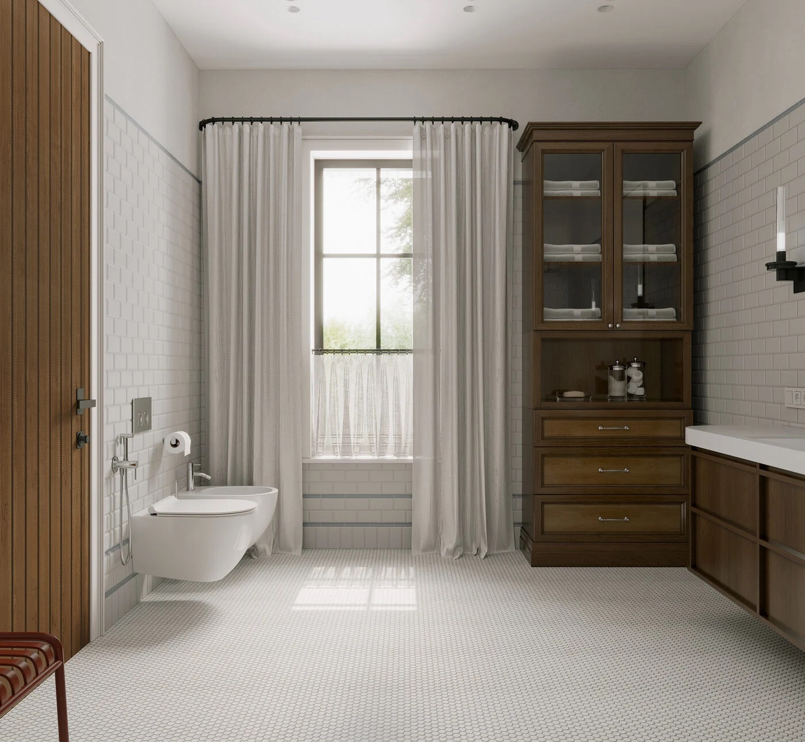
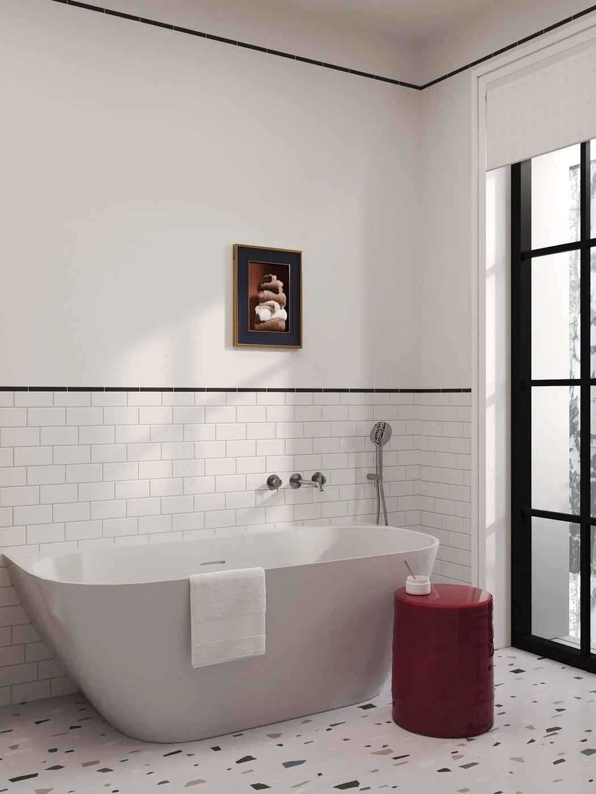
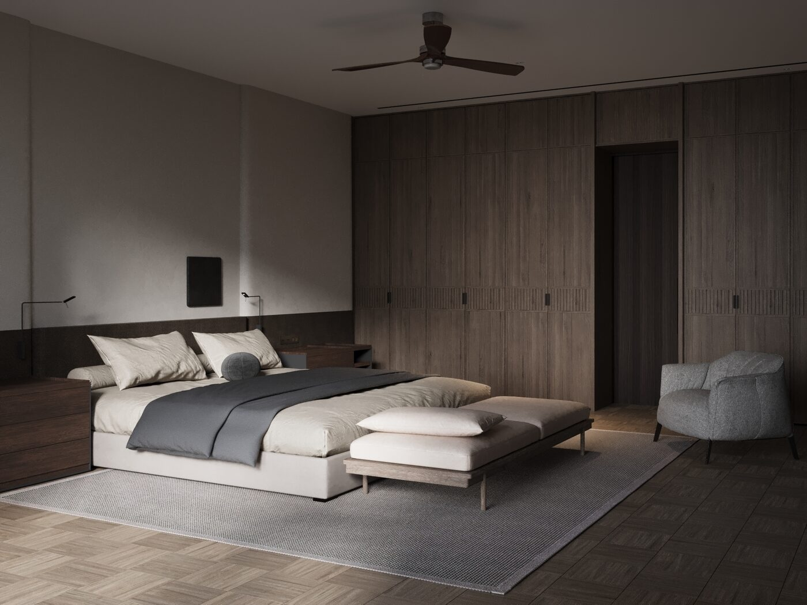
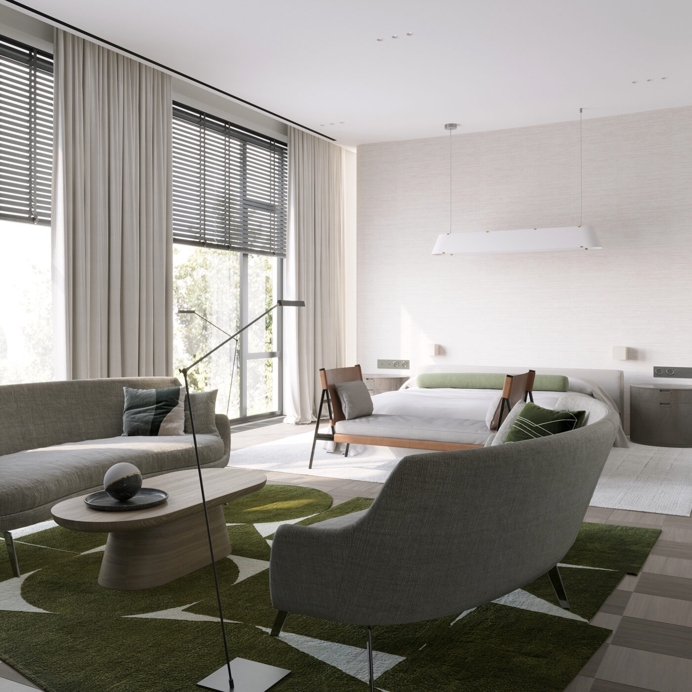

Идея этой концепция — перенести ощущение нью-йоркского High Line в частное пространство квартиры. И подчеркнуть основное преимущество этого пространство — терраса в мегаполисе.



Идея этой концепция — перенести ощущение нью-йоркского High Line в частное пространство квартиры. И подчеркнуть основное преимущество этого пространство — терраса в мегаполисе.


Концепция проекта основана на сочетании классической архитектуры и современной функциональной среды. Классические элементы становятся фоном для лаконичной мебели, графичной геометрии и современных материалов, а тёплые фактуры и свет добавляют пространству камерность и уют.










